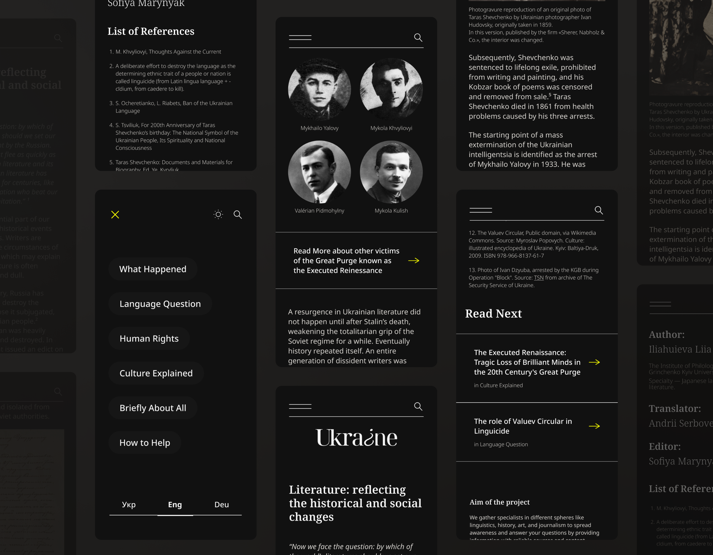
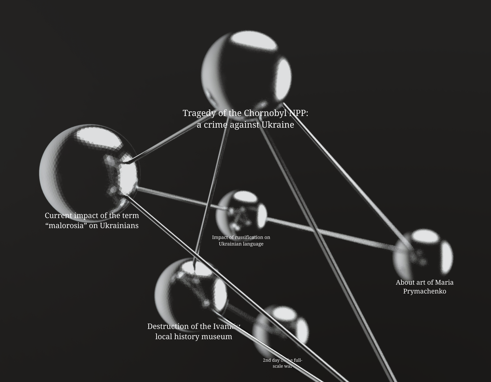
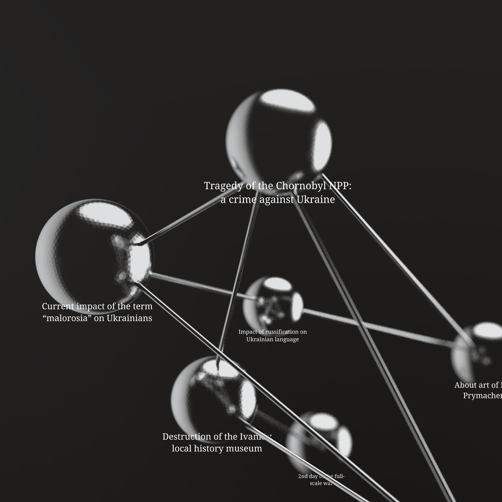
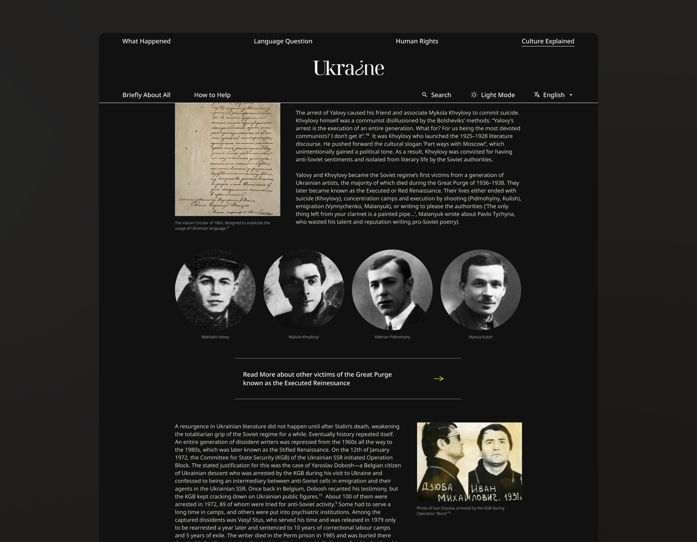
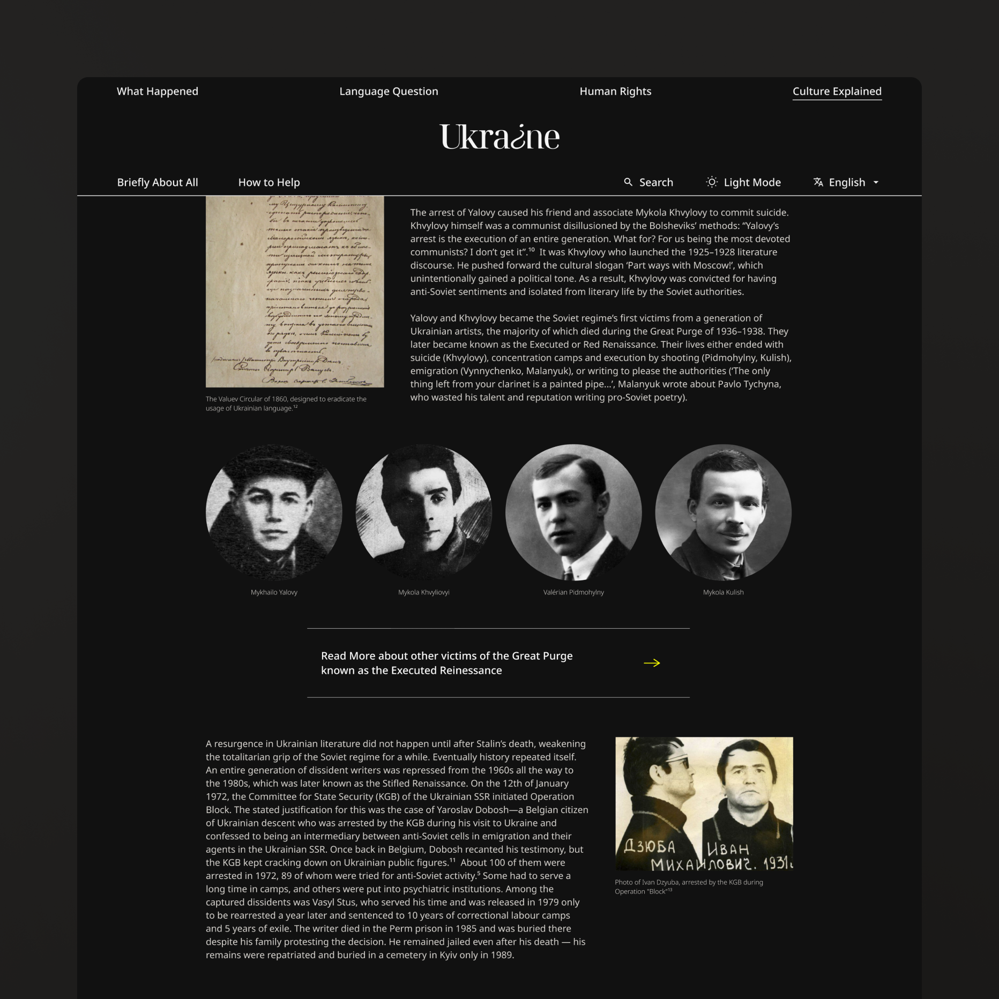
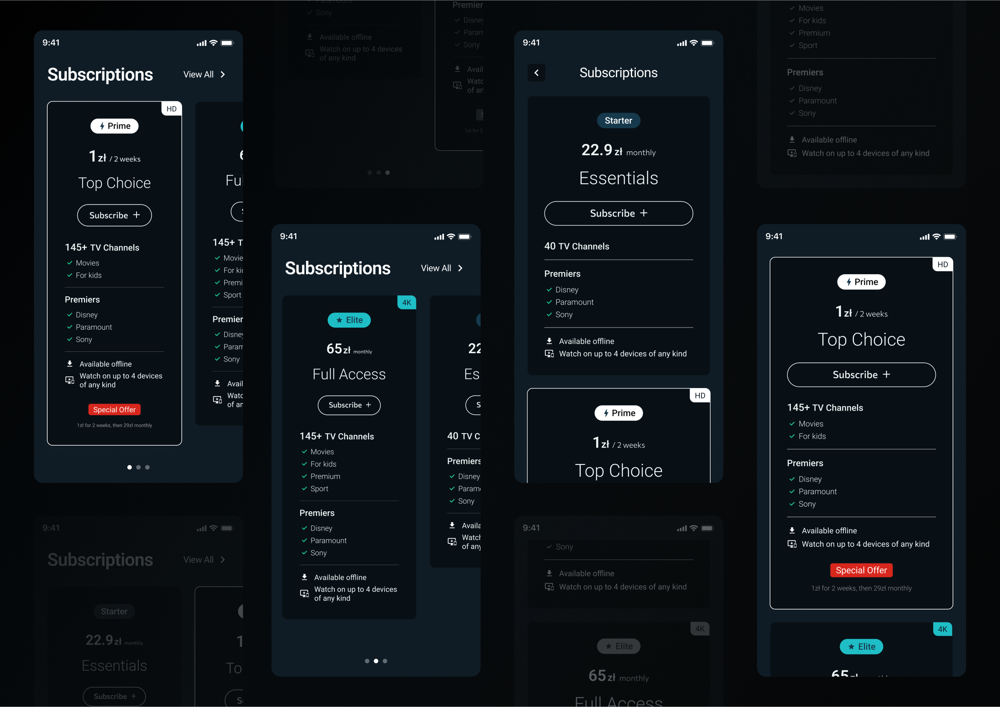
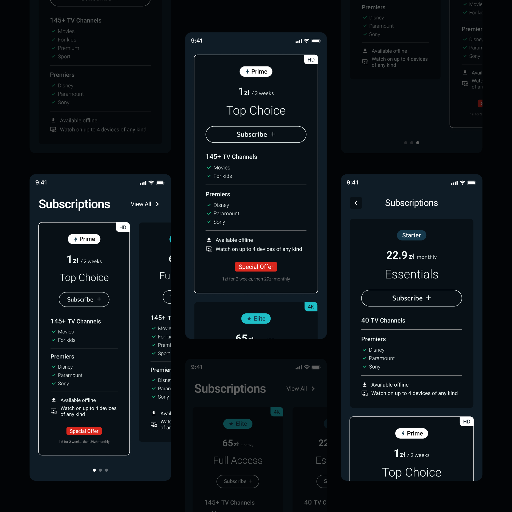
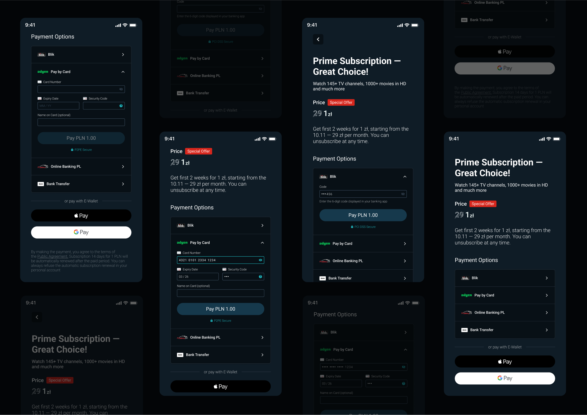
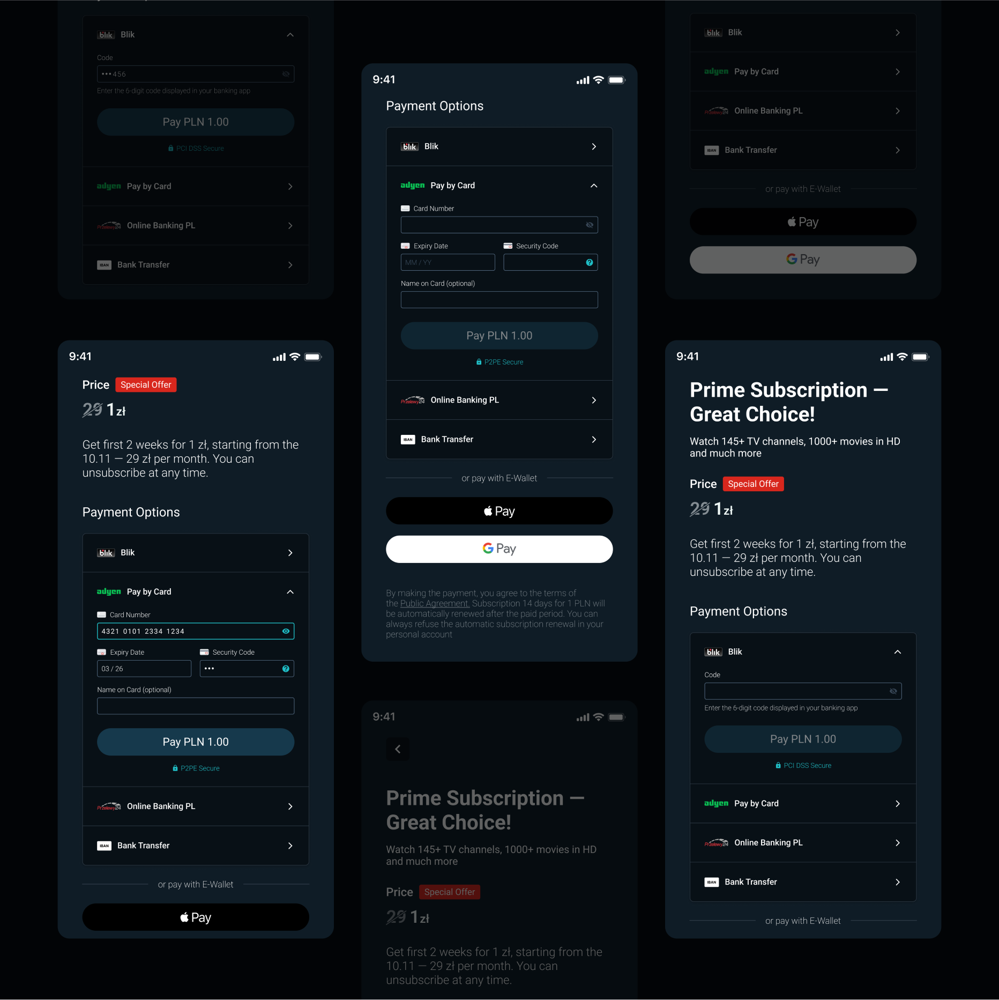

Pet Project
Information-seeking behavior and user patterns
Exploration of encouraging intrinsic user motivation by applying data-informed strategies in designing an educational web project.
Pet Project
Information-seeking behavior and user patterns
Exploration of encouraging intrinsic user motivation by applying data-informed strategies in designing an educational web project.
July 2023 · 5 min read
Background

When designing the project that is sought to raise awareness and resist misinformation, fostering intrinsic motivation is fundamental. That means encouraging users to engage deeply with content out of interest rather than obligation.
By curating well-sourced content and making it available in multiple languages, the website aimed to shift perceptions among key international audiences, and ultimately spark off greater support for Ukraine.
Based on research to identify widespread myths and misinformation, the content should be tailored to debunk these narratives with localized, verifiable information adapted to the concerns of different audiences.
The project goal is to become an open platform for historians, researchers, and journalists to publish their work in a distributable format supported with fact-checking, credible sourcing, and editorial oversight to ensure the reliability.
That’s why my objective was to create an experience that encourages natural information-seeking behavior and user exploration patterns.

User Pattern: going down the rabbit hole


Wiki rabbit hole is a learning path that a reader follows by moving from one topic to another through links. This happens when users, initially searching for specific information, end up navigating through multiple interconnected topics, leading to extensive content engagement. Wikipedia and Public Domain Review exemplify this behavior, where users may begin with a single query and find themselves hours later exploring indirectly related subjects.
Casual browsing model
Often called ”‘Don’t know what you need to know”, the model conveys that people sometimes don’t know what they are truly looking for in the beginning of their learning path. They may search for specifics that they believe are the answer, discovering the real solution in something else, or they may browse without a specific goal in mind.
This model of information seeking behaviour is apparent when being persuasive is needed, especially relevant when the user lacks awareness in the topic. One of the prominent examples here would be public health.
Regardless of the field, another instance is word-of-mouth. Initially engaging individuals trusted by the target audience, for example influencers and subject-matter experts, users are prompted to explore the content out of endorsement. In this approach users may get acquainted with the website without knowing why they want to learn about it or what their goal is when browsing it.
Lastly, the model is noticeable when users simply want to stay informed. People often want to keep being up to date on what's happening in a particular field or topic, without looking for a specific answer.


Design to support information discovery


Offering concise responses to common queries ensures users quickly find the information they need. For instance, a “Briefly About All” section can summarize key facts while linking to detailed articles.
Incorporating dynamic cross-referencing allows users to seamlessly transition from one topic to another, establishing the rabbit hole effect. This can be achieved through inline references, “Read Next” sections with related articles, and topic-based navigation cues.
Understanding the motivations of different user groups such as activists, influencers, researchers, and educators, allows tailoring content to their interests and existing knowledge gaps, and encourages sharing.
By designing for exploratory behavior and intrinsic motivation, we can create more engaging and impactful educational platforms that not only inform but inspire users to continue learning and raising awareness.
“text”
Leading the project to the top 15 hackathon finalists


As the initiator of this project, I had been guiding a multi-disciplinary team of volunteers, shaping vision and direction.
Taking part in the Хататон 4.0: Ukraine Heritage Edition felt like a natural extension of that journey. Aligning our goals with the broader mission of the hackathon, we focused on the “Culture Explained” website section.
I took on the challenge of assembling a small but dedicated team that brought together specialists from diverse backgrounds, such as business and data analysis, front-end development, journalism, research and communications.
I guided our project as a team lead within the intense timeframe of the hackathon. One of the most rewarding aspects was seeing how quickly we adapted and collaborated. Our ability to iterate rapidly, refine our ideas, and incorporate mentorship feedback played a key role in our project making it to the final.
Leading a volunteer-driven project comes with unique challenges such as balancing motivation, sustaining momentum, and ensuring that everyone’s contributions align toward a shared goal. While the initiative ultimately didn’t scale in the way we had hoped, this experience made certain that our efforts were meaningful and left us with valuable takeaways on how to approach similar projects in the future.
Save by leveraging external secondary data
The importance of secondary data in UXR is in its wider reach that helps contextualize your research and ensure the effort is justified. There is internal secondary data like tracking, and external such as industry reports and so on. However one should not solely rely on the external secondary data itself, checking already available sources of information is feasible, time-saving and often free or cheaper than running a study.
Anyways not any piece of information is useful so to differentiate if it is, you can ask yourself these questions:
Is this information relevant to your research? In general like demographics and in other ways as for example if their questions were too specific.
Is the source reliable? Which methods did they use and were they properly applied? I wouldn’t recommend relying on others’ qualitative research findings ever, as the chance it really works for your specific research need is at its lowest.
Were there enough participants for data to be considered quantitative? Even if the study is called quantitative but the respondents amount is small then the answers are considered random or accidental.
Is it outdated? Not always being outdated is regarding the year of when study was published, but more about the lived context influenced by external factors.
Is this information relevant to your research? In general like demographics and in other ways as for example if their questions were too specific.
Is the source reliable? Which methods did they use and were they properly applied? I wouldn’t recommend relying on others’ qualitative research findings ever, as the chance it really works for your specific research need is at its lowest.
Were there enough participants for data to be considered quantitative? Even if the study is called quantitative but the respondents amount is small then the answers are considered random or accidental.
Is it outdated? Not always being outdated is regarding the year of when study was published, but more about the lived context influenced by external factors.
Increasing conversion via Payment Form redesign


According to a consumer insights survey by Statista conducted among 699 Polish respondents aged 18-64 years, the most used mobile payment brands are Blik, Google Pay, and PayU.
Resulting in my design suggestion to highlight Blik, consider integrating PayU if feasible, and maintain support for popular e-wallet options like Google Pay and Apple Pay. The other research, which was conducted by Adriana Sas who specialises in society and the economy, targeted e-shoppers to find preferred digital payment methods in Poland. The Computer-assisted web interviews (CAWI) method was used and survey’s results from 2023 indicated that Blik is the most popular payment method, followed by payment by card and E-Wallet options.
That’s why I recommended changing the order of payment formats in a form to prioritise Blik, following it by card payment, and then E-Wallet options. The survey published on Statista with 2 000 respondents aged 18-65 explored the perceived advantages of subscription services compared to one-time services in Poland in 2019. Its results highlighted security in financial transactions as the second most valued benefit when buying a subscription.
As a conclusion, showing that it's crucial to ensure that the payment process is perceived as secure and so is trusted. Firstly I increased transparency by providing specific information on the form payment process security. Then, to make the trusted provider more recognisable I’ve aligned the Adyen logo with their branding rules.
The clarity also plays a huge role in the processes that require trust from the user, so there is no place for confusing input labels. Input labels represent data format, so for example the MM/DD label is required, however CVC/CVV label might be conversely confusing as there’re also CVC2/CVV2/CID/CSC code names.
I won’t cover the input fields validation topic in this case study as they were done well and needn’t redesign. But talking about input fields in general, clear inputs are easier to read, and that leads us to accessibility considerations. I improved the color contrast of course, but it is important to remember that accessibility goes far further than that and so for instance I’ve added more spacing between numbers (e.g. Card Number) to increase readability and make design more inclusive.
Most importantly, the sensitive data should be visually hidden in the form as for example the Security Code and Card Number. That’s why I introduced the icon button that allows the user to turn visibility on and check their input.
Resulting in my design suggestion to highlight Blik, consider integrating PayU if feasible, and maintain support for popular e-wallet options like Google Pay and Apple Pay. The other research, which was conducted by Adriana Sas who specialises in society and the economy, targeted e-shoppers to find preferred digital payment methods in Poland. The Computer-assisted web interviews (CAWI) method was used and survey’s results from 2023 indicated that Blik is the most popular payment method, followed by payment by card and E-Wallet options.
That’s why I recommended changing the order of payment formats in a form to prioritise Blik, following it by card payment, and then E-Wallet options. The survey published on Statista with 2 000 respondents aged 18-65 explored the perceived advantages of subscription services compared to one-time services in Poland in 2019. Its results highlighted security in financial transactions as the second most valued benefit when buying a subscription.
As a conclusion, showing that it's crucial to ensure that the payment process is perceived as secure and so is trusted. Firstly I increased transparency by providing specific information on the form payment process security. Then, to make the trusted provider more recognisable I’ve aligned the Adyen logo with their branding rules.
The clarity also plays a huge role in the processes that require trust from the user, so there is no place for confusing input labels. Input labels represent data format, so for example the MM/DD label is required, however CVC/CVV label might be conversely confusing as there’re also CVC2/CVV2/CID/CSC code names.
I won’t cover the input fields validation topic in this case study as they were done well and needn’t redesign. But talking about input fields in general, clear inputs are easier to read, and that leads us to accessibility considerations. I improved the color contrast of course, but it is important to remember that accessibility goes far further than that and so for instance I’ve added more spacing between numbers (e.g. Card Number) to increase readability and make design more inclusive.
Most importantly, the sensitive data should be visually hidden in the form as for example the Security Code and Card Number. That’s why I introduced the icon button that allows the user to turn visibility on and check their input.
How to seamlessly transition users from free to paid subscription
The popular strategy to make the transition from a free trial to a paid subscription as easy as possible is to break the price down in half before billing the regular price.
Proposed transition starts with a 1 week free trial where no card is required. Later, the card details are requested to continue into 2 weeks of special offer for 1 zł. After the offer ends, the user is automatically billed for the next 2 weeks but with a 50% sale off the price. Next, the full price is paid monthly, being billed per 11 months.
This way the user spends more time subscribed, leading to higher commitment, which then results in lower cancelling rates.
However, the A/B testing is recommended, to eliminate risks and ensure that influence on all metrics is taken into account beforehand.
Video Description
The video doesn't contain any sound. It demonstrates a part of the flow of a user buying a subscription.
The user is browsing through promotional cards that display each plan's perks. They select a Prime subscription that has a special offer and are then taken to a page that explains the discount process. On that page the user can choose from 6 payment options, including Blik, payment by card with Adyen, Online Banking PL and IBAN Bank Transfer, as well as E-Wallet options of Apple and Google Pay.
When the user taps on "Pay by Card," the input fields for card details expand. The Card Number field has an icon button that unhides the numbers, and once the user fills in the Expiry Date and Security Code, the payment button becomes enabled. Underneath the button, there is a lock icon with text that reads: "P2PE Secure."
On the other hand, if the user chooses the Blik payment option, they are prompted to enter a 6-digit code displayed in their banking app. After the code is entered, only the last 3 numbers are displayed for security purposes.